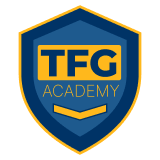

Domine os subsistemas, implemente processos do zero e torne-se o braço direito da diretoria com o método de Leidi Brancher.
QUERO ME TORNAR UM RH ESTRATÉGICO AGORAVocê sente que o RH da sua empresa ainda é visto apenas como um setor que "faz folha" ou "contrata e demite"? É hora de assumir o protagonismo que o negócio exige.
A TFG Academy — a sua plataforma de educação executiva focada em resultados reais, desde obrigações como DIRF até gestão de negócios — apresenta o curso RH Estratégico.
Ministrado por Leidi Brancher, este treinamento foi desenhado para profissionais que buscam segurança técnica e visão de mercado.
Aqui, você sairá do operacional reativo para construir uma área de Recursos Humanos que gera lucro, retém talentos e fala a língua dos donos.
Módulos desenhados para a prática real corporativa.
Do perfil do profissional moderno à implantação da área do zero.
Aprenda a ler a alma da empresa e planejar estrategicamente.
Como elaborar códigos de conduta e procedimentos que funcionam na prática.
Técnicas de triagem, entrevista e devolutivas que garantem o "match" perfeito.
Matriz de treinamentos, Cargos e Salários, e Pesquisas de Clima assertivas.
Domine indicadores (KPIs) e mostre o valor financeiro do seu trabalho.
Inovação, tendências e um módulo exclusivo sobre liderança de times de RH.
Diferente de cursos puramente acadêmicos, na TFG Academy entregamos a prática real das empresas. Você terá acesso a 12 módulos densos e direto ao ponto.
Cobrindo desde o Endomarketing até a manutenção complexa de subsistemas, tudo com o suporte de uma plataforma que entende as dores do dia a dia contábil e empresarial.
"Não seja apenas um RH que executa. Seja o RH que planeja, mede e transforma o resultado da empresa."
Especialista em Gestão de Pessoas e Transformação Organizacional
Com 20 anos de experiência no universo do RH, Leidiana combina uma trajetória acadêmica robusta com a vivência prática em empresas de diversos portes. Sua missão é transformar o RH no motor de resultados da organização.
Fundadora da TFG Academy | Consultora Tributária e Especialista em eSocial
Referência nacional, Tatiana já capacitou mais de 10.000 alunos em todo o Brasil. Ela criou a TFG Academy para ser o antídoto contra a falta de direcionamento prático no mundo corporativo.
Inscreva-se hoje na TFG Academy e transforme o RH da sua empresa.
QUERO ME TORNAR UM RH ESTRATÉGICO AGORA